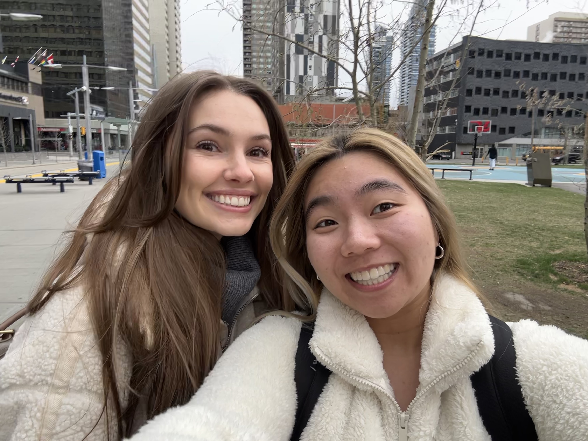

Leadership Experience
My Experience in Leadership
Ban Khuyen Hoc
March 2025 - Present
Ban Khuyen Hoc (BKH), or the Calgary Vietnamese Association for Encouragement of Learning (CVAEL), is a non-profit organization dedicated to breaking down barriers and increasing access to educational resources for students of Vietnamese descent. There are two main education initiatives – free tutoring and scholarships – that aim to empower students and foster academic success.
Currently, I’m a member of the Board of Directors, and hold several positions. My primarily role is Program Coordinator for the Tutoring Centre. As the Program Coordinator, I’m responsible for overseeing the day-to-day operations of the tutoring programs, ensuring that staff are functioning effectively and that the centre is stocked with the necessary supplies and resources.
In addition to managing the Tutoring Centre, I also serve as one of the Marketing Specialists. In this role, I manage the organization’s social media accounts (Instagram, Facebook) as well as the website. My primary focus is maintaining and improving the website to ensure that our message reaches as many people as possible. Through my work, I strive to foster a supportive and empowering environment for both students and the wider Vietnamese community in Calgary.
Calgary Board of Education
April 2024- August 2024
In the summer of 2024, I was given the amazing opportunity to join the Employee Health Resource Center (EHRC) at the Calgary Board of Education (CBE) It was an absolutely invaluable experience where I learned more than I could have imagined, and I was able to form connections with people that I never would have met otherwise. Truly, it was an amazing experience that I am beyond thankful for.
I was tasked with creating Job Demand Assessments (JDAs) for all of the positions within the CBE. For context, JDAs are documents that outline the physical and cognitive aspects of any given job. They are used by physiotherapists, insurance companies, and employers to determine when employees are fit enough to return to work. They are also important for accommodation processes for staff. In the span of 4 months, I met with over 100 employees and conducted thorough interviews on more than 60 different positions. While there was a lot of trial and error along the way, I am very happy to share that I finished with over 45 completed JDAs. In addition to having these JDAs to show for my time with the CBE, I also have long lasting connections with many of the people that I was fortunate enough to meet and interview. It was truly an experience more wonderful than I could have ever asked for. I’ve never been more confident in my goal to become an educator with the CBE.
Piano Melodies Society
December 2024 - Present
Piano Melodies Society is a club at the University of Calgary that aims to foster an inclusive environment where piano players and piano enjoyers can come together over their shared love of piano. We hold numerous events throughout the year such as masterclasses, jam sessions, recitals, and meet and greets.
Within the club, I am a newly appointed Junior Vice President of Events. This means that my role is to brainstorm new events, figure out the logistics of each event, and find ways to fundraise for our club. Given the relational nature of the club, my ultimate goal is to create events that cater to both piano players and people who do not play piano!
Werklund Undergraduate Ambassadors Team
October 2024 - Present
The Werklund Undergraduate Ambassadors Team consists of undergraduate education students who want to become involved in the Werklund community. Ambassadors represent the Werklund School of Education at large scale events, provide peer-to-peer knowledge, plan events for Werklund students, and network with instructors, faculty, staff, and fellow students.
This year is my first year as an Ambassador, and I am very excited to be joining the team! So far, the team has been hard at work brainstorming initiatives for the year. We are also currently planning a welcome event for Education students. Stay tuned to see the wonderful events that we’ll be hosting!
StarGATE Mentorship Program
July 2024 - Present
The StarGATE Mentorship program was created in collaboration with GATE Calgary with the aim of inspiring today’s youth. It works by pairing middle or high school students with Mentors from the University of Calgary. Mentor-mentee pairings meet once a month and discuss things such as career pathways, university life, and education options. It’s a wonderful program that I was able to be a part of as a Mentor before becoming an executive member!
As an executive member, I have the official title of Junior Vice President. In my role, I work to pair Mentors and Mentees by looking at their common interests and career aspirations and pairing them with someone who can connect and relate to them. In addition to creating pairings, I also work to facilitate monthly meetings by providing Mentors and Mentees with resources and question samples. Overall, I find the program incredibly rewarding, and I absolutely love assisting pairings and meeting them during events!
The Vietnamese Students' Association
November 2023 - Present
 The Vietnamese Students' Association (VSA) is a student led club at the University of Calgary. Our mission is to foster a sense of community between Vietnamese students at the university and to provide them with a safe space to explore their connection to the culture. We host a few events every month, notably that of a Volleyball Tournament, Hoi Cho Tet, and Gala!
The Vietnamese Students' Association (VSA) is a student led club at the University of Calgary. Our mission is to foster a sense of community between Vietnamese students at the university and to provide them with a safe space to explore their connection to the culture. We host a few events every month, notably that of a Volleyball Tournament, Hoi Cho Tet, and Gala!
Within the club, I am currently a consultant! This means that I rotate between the various portfolios and aid other executives with their tasks. This ranges from things such as media creation and marketing to acquiring sponsorships and event planning!
So far, I've worked on the teams that have organized and managed major full day events such as the VSA Volleyball Tournament and Hoi Cho Tet. These are two of our biggest events, garnering over 300 and 1400 people, respectively. During our Hoi Cho Tet event, I worked as a liaison, showing around notable guests such as MLAs, MPs, the Mayor, and Senators. I specifically showed around Mayor Jyoti Gondek and MLA Peter Singh, and made sure that not only were they able to navigate the event, but they were also able to gain a better understanding of Vietnamese culture and traditions. It was a lovely experience meeting both of them, and I even got a photo with Peter Singh! In addition to these events, I've also worked on minor events such as a bakesale, movie night, and crafts night!